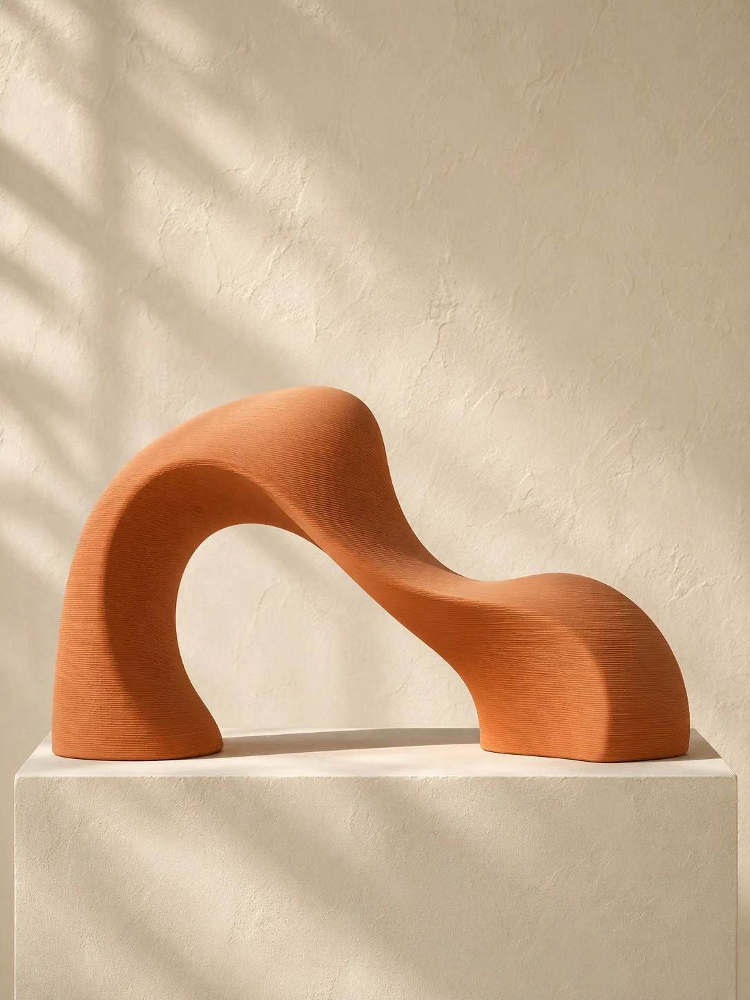
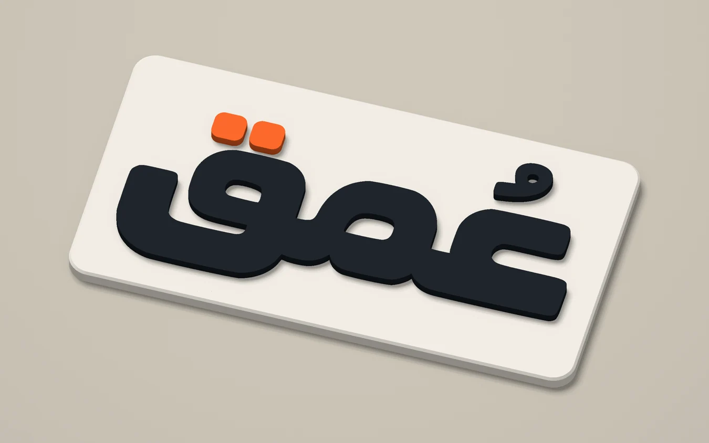
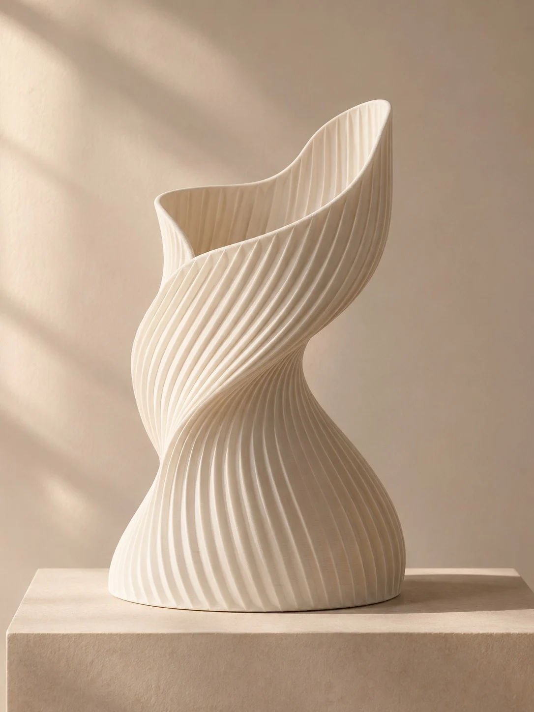
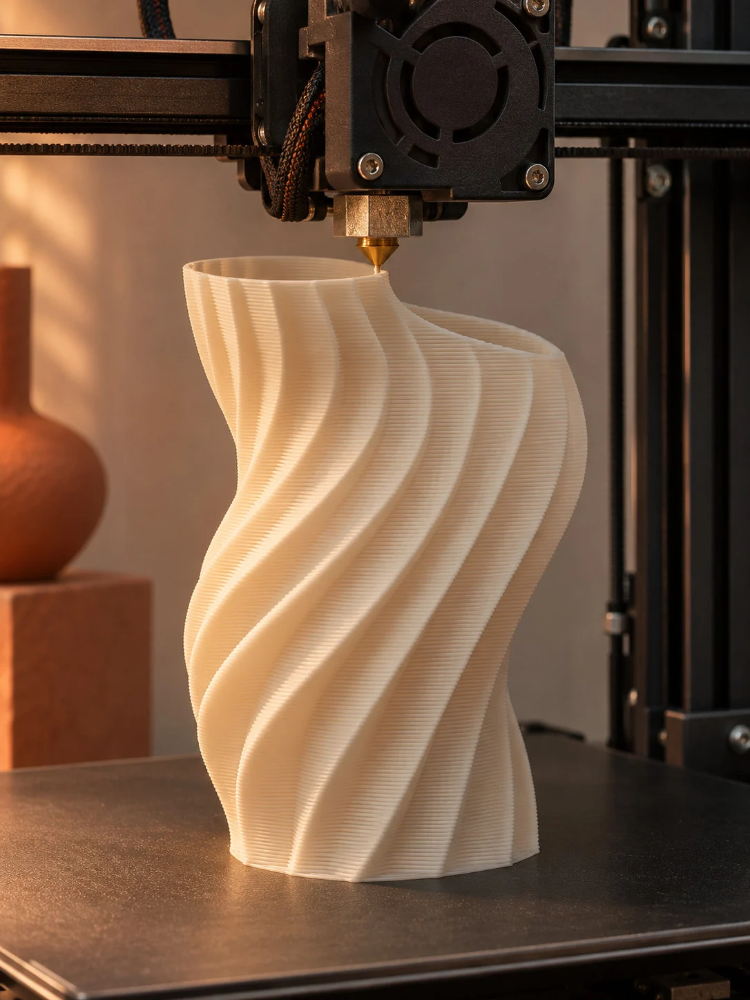

استوديو سعودي للفن والتصميم
FORM / MATTERفكرة تأخذ شكلًا.
في «عُمق» نرسم الخطّ ثم نبنيه طبقةً فوق أخرى. استكشف الأعمال عن قرب، وشاهد كيف يتحوّل الرسم إلى قطعة.
من الخطّ إلى الكتلة

FIG. 01 / 03دراسات بصرية
انحناء مفتوحقوس
من المعرض
تصفّح كل الأعمال
أعمال مختارة

الصور دراسات توضيحية لاتجاه الاستوديو الفني.
من تطبيقات الهوية
استوديو
استوديو
الطباعة
للشعار هنا سُمكٌ وظلّ. شاهد كيف تبدو حروف «عُمق» بارزة على لوحة، ثم افتح عيّنة ثلاثية الأبعاد أو افحص ملفّ STL من جهازك.
ادخل استوديو الطباعة
دراسة السطح / طَيّة
مختبر الملمس
من بعيد، يظهر الانحناء. ومن قرب، ترى خطوط الطباعة وهي تتبع المنحنى نفسه.
٥٠٪
اسحب الفاصل على الصورة، أو استخدم الأسهم في شريط المقارنة.


طَيّة — دراسة بصريةSURFACE / 01

PROCESS STUDY / 01من الورشةطبقة فوق
طبقة فوق
طبقة.
كيف يصبح مسار رفيع شكلًا مجسّمًا؟ أدر النموذج الحلزوني، ثم خفِّض ارتفاعه وابنِه من القاعدة طبقةً بعد طبقة.
قارن ملمس القطعةهوية عُمق
توقيع القطعة
كلمة عربية متّصلة، تعلو عينَها ضمّة، وتضيء قافَها نقطتان برتقاليتان. اكتشف الشعار والألوان والخطوط التي ترافق أعمال الاستوديو.
افتح دليل الهوية